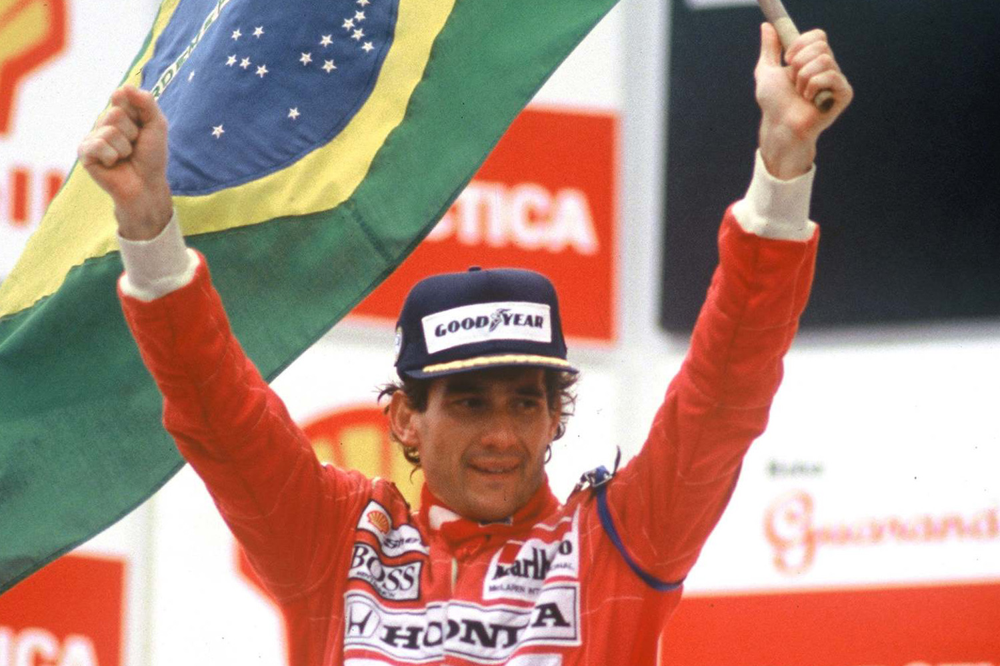

Ayrton Senna da Silva
O melhor piloto de F1 já visto.

Premios Grand Prix
1988 - McLaren
1990 - McLaren
1991 - McLaren
Outras conquistas
Bicampeão paulista da modalidade (1974 e 1976); tricampeão brasileiro (1978, 1979 e 1980) e duas vezes campeão sul-americano (1977 e 1980)
Se deseja saber mais clique nesse texto